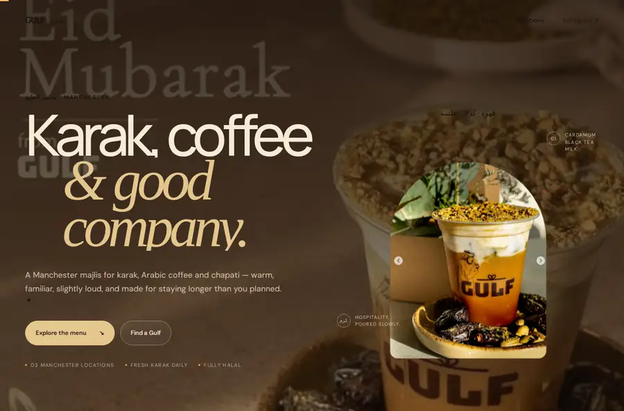

THE PROJECT ARCHIVE
Built to be
explored.
Independent website concepts for real businesses. Explore the live builds, inspect the source, and follow the process behind each project.
Explore the work
PUBLIC REPOSITORIES · Automatically updated

01 / 100-DAY CHALLENGEGulf MCR